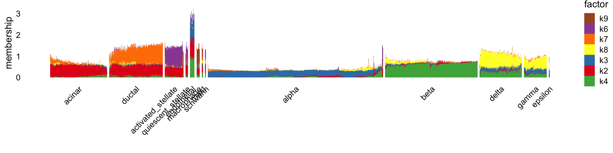

Last updated: 2025-02-20
Checks: 7 0
Knit directory:
single-cell-jamboree/analysis/
This reproducible R Markdown analysis was created with workflowr (version 1.7.1). The Checks tab describes the reproducibility checks that were applied when the results were created. The Past versions tab lists the development history.
Great! Since the R Markdown file has been committed to the Git repository, you know the exact version of the code that produced these results.
Great job! The global environment was empty. Objects defined in the global environment can affect the analysis in your R Markdown file in unknown ways. For reproduciblity it’s best to always run the code in an empty environment.
The command set.seed(1) was run prior to running the
code in the R Markdown file. Setting a seed ensures that any results
that rely on randomness, e.g. subsampling or permutations, are
reproducible.
Great job! Recording the operating system, R version, and package versions is critical for reproducibility.
Nice! There were no cached chunks for this analysis, so you can be confident that you successfully produced the results during this run.
Great job! Using relative paths to the files within your workflowr project makes it easier to run your code on other machines.
Great! You are using Git for version control. Tracking code development and connecting the code version to the results is critical for reproducibility.
The results in this page were generated with repository version 6cf9aa7. See the Past versions tab to see a history of the changes made to the R Markdown and HTML files.
Note that you need to be careful to ensure that all relevant files for
the analysis have been committed to Git prior to generating the results
(you can use wflow_publish or
wflow_git_commit). workflowr only checks the R Markdown
file, but you know if there are other scripts or data files that it
depends on. Below is the status of the Git repository when the results
were generated:
Ignored files:
Ignored: analysis/figure/
Untracked files:
Untracked: analysis/temp.R
Untracked: data/GSE132188_adata.h5ad.h5
Untracked: data/Immune_ALL_human.h5ad
Untracked: data/pancreas_endocrine.RData
Untracked: data/pancreas_endocrine_alldays.h5ad
Unstaged changes:
Modified: code/annotation_plots.R
Note that any generated files, e.g. HTML, png, CSS, etc., are not included in this status report because it is ok for generated content to have uncommitted changes.
These are the previous versions of the repository in which changes were
made to the R Markdown (analysis/pancreas_annotate.Rmd) and
HTML (docs/pancreas_annotate.html) files. If you’ve
configured a remote Git repository (see ?wflow_git_remote),
click on the hyperlinks in the table below to view the files as they
were in that past version.
| File | Version | Author | Date | Message |
|---|---|---|---|---|
| Rmd | 6cf9aa7 | Peter Carbonetto | 2025-02-20 | wflow_publish("pancreas_annotate.Rmd", verbose = TRUE, view = FALSE) |
| Rmd | 105293f | Peter Carbonetto | 2025-02-20 | Removed newsgroups_annotate.R. |
| html | 66b44ce | Peter Carbonetto | 2025-02-20 | Added plots for semi-NMF to pancreas_annotate analysis. |
| Rmd | 9440e05 | Peter Carbonetto | 2025-02-20 | workflowr::wflow_publish("pancreas_annotate.Rmd", verbose = TRUE, |
| Rmd | 07d482e | Peter Carbonetto | 2025-02-19 | Fixed a few words in the pancreas_annotate analysis. |
| Rmd | b264152 | Peter Carbonetto | 2025-02-19 | A bit of formatting adjustment to the pancreas_annotate rmarkdown. |
| Rmd | 20ddb47 | Peter Carbonetto | 2025-02-19 | Added another note. |
| Rmd | 190f7c3 | Peter Carbonetto | 2025-02-19 | Edited a note about interpretation to the pancreas_annotate analysis. |
| html | 1f93686 | Peter Carbonetto | 2025-02-19 | Added an ‘interpretable’ annotation plot to the pancreas_annotate analysis. |
| Rmd | b36508b | Peter Carbonetto | 2025-02-19 | wflow_publish("pancreas_annotate.Rmd", verbose = TRUE, view = FALSE) |
| Rmd | a8d4576 | Peter Carbonetto | 2025-02-19 | A few edits to the text of the pancreas_annotate analysis. |
| Rmd | 9dd5b4a | Peter Carbonetto | 2025-02-19 | Added annotation plots for flashier NMF result to pancreas_annotate analysis. |
| Rmd | 335dd81 | Peter Carbonetto | 2025-02-19 | Added structure plot to pancreas_annotate analysis. |
| html | e771738 | Peter Carbonetto | 2025-02-18 | First build of the pancreas_annotate analysis. |
| Rmd | 371108b | Peter Carbonetto | 2025-02-18 | workflowr::wflow_publish("pancreas_annotate.Rmd", verbose = TRUE) |
Here we re-examine some of the matrix factorization results from the pancreas CEL-seq2 data, with the goal of understanding how best to annotate the pancreas factors. As we will see, there isn’t a single “one-size-fits-all” strategy that works best, and so we recommend exploring different annotation strategies. Also, careful interpretation of the matrix factorization is discussed.
A side benefit of this investigation is to illustate some useful
plotting strategies, including the annotation_heatmap()
function from the [fastTopics][fastTopics package].
First, load the packages needed for this analysis.
library(Matrix)
library(flashier)
library(fastTopics)
library(ggplot2)
library(ggrepel)
library(cowplot)Set the seed for reproducibility.
set.seed(1)Load the CEL-Seq2 pancreas data and the outputs generated by running
the compute_pancreas_celseq2_factors.R script.
load("../data/pancreas.RData")
load("../output/pancreas_celseq2_factors.RData")
i <- which(sample_info$tech == "celseq2")
sample_info <- sample_info[i,]
counts <- counts[i,]
sample_info <- transform(sample_info,celltype = factor(celltype))We will first focus on the non-negative matrix factorization (NMF) produced by flashier.
The Structure plot (also shown in the previous analysis) shows that many of the factors correspond closely to the cell-type assignments that were estimated in the published analysis:
celltype <- sample_info$celltype
celltype <-
factor(celltype,
c("acinar","ductal","activated_stellate","quiescent_stellate",
"endothelial","macrophage","mast","schwann","alpha","beta",
"delta","gamma","epsilon"))
L <- fl_nmf_ldf$L
colnames(L) <- paste0("k",1:9)
structure_plot(L[,-1],grouping = celltype,gap = 10,perplexity = 70,n = Inf) +
labs(y = "membership",fill = "factor",color = "factor")
| Version | Author | Date |
|---|---|---|
| 1f93686 | Peter Carbonetto | 2025-02-19 |
Note that the first factor was omitted in the Structure plot because it is a “baseline” factor, and not particularly interesting to look at.
A note about interpretation: For visualization purposes, the columns of the L matrix—the “membership matrix”—were scaled so that the largest membership for a given factor (column) was always exactly 1. However, please note this normalization is arbitrary. Therefore, it is not meaningful to compare memberships across factors (i.e., colors in the Structure plot); it is only meaningful to compare memberships within a given factor (a single color in the Structure plot).
To illustrate annotating the factors, let’s focus on factors 4, 5 and
6—these are the factors that largely capture the islet cells (alpha,
beta, etc). Let’s consider two different selection strategies:
(i) choosing genes \(j\) with the
largest \(f_{jk}\); (ii) choosing genes
\(j\) with the largest differences
\(f_{jk} - f_{jk'}\) with other
factors \(k'\) (“distinctive
genes”). These two selection strategies are implemented in the
annotation_heatmap function:
F <- fl_nmf_ldf$F
colnames(F) <- paste0("k",1:9)
kset <- paste0("k",4:6)
p1 <- annotation_heatmap(F,n = 8,dims = kset,
select_features = "largest",
font_size = 9) +
labs(title = "select_features = \"largest\"") +
theme(plot.title = element_text(face = "plain",size = 9))
p2 <- annotation_heatmap(F,n = 8,dims = kset,
select_features = "distinctive",
compare_dims = kset,
font_size = 9) +
labs(title = "select_features = \"distinctive\"") +
theme(plot.title = element_text(face = "plain",size = 9))
plot_grid(p1,p2,nrow = 1,ncol = 2)
| Version | Author | Date |
|---|---|---|
| 1f93686 | Peter Carbonetto | 2025-02-19 |
# Features selected for plot: INS IAPP SCGN SLC30A8 ABCC8 G6PC2 NPTX2 HADH GCG CHGB TM4SF4 TTR SCG2 SCG5 ALDH1A1 PCSK2 SST RBP4 PCSK1 CPE PPY SEC11C ISL1
c("INS", "IAPP", "SCGN", "SLC30A8", "ABCC8", "G6PC2", "NPTX2",
"HADH", "GCG", "CHGB", "TM4SF4", "TTR", "SCG2", "SCG5", "ALDH1A1",
"PCSK2", "SST", "RBP4", "PCSK1", "CPE", "PPY", "SEC11C", "ISL1"
)
# Features selected for plot: INS IAPP NPTX2 MAFA MEG3 ADCYAP1 PFKFB2 DLK1 GCG GC TTR TM4SF4 FAP LOXL4 ALDH1A1 CRYBA2 SST AQP3 PPY LEPR EGR1 RBP4 DPYSL3 AKAP12
c("INS", "IAPP", "NPTX2", "MAFA", "MEG3", "ADCYAP1", "PFKFB2",
"DLK1", "GCG", "GC", "TTR", "TM4SF4", "FAP", "LOXL4", "ALDH1A1",
"CRYBA2", "SST", "AQP3", "PPY", "LEPR", "EGR1", "RBP4", "DPYSL3",
"AKAP12")Strategy (i) picks out some canonical marker genes for islet cells such as INS for beta cells and GCG for alpha cells. But it also picks out other genes that are highly expressed in multiple islet cell types, such as SCGN and TTR. Strategy (ii) focusses more strongly on genes that distinguish one cell type from another, and as a result marker genes such as MAFA (beta cells) and GC (alpha cells) are ranked more highly with this strategy.
Below, we take a closer look at the ranking of the genes based on these two strategies, and suggest another simple visualization which could be useful. (See: “A closer look at ranking genes by largest versus distinctive”.)
The better strategy will depend on the setting and on the goals of
the analysis, which is why the annotation_heatmap function
provides both options. These selection strategies can also reveal
complementary insights and so in many situations it may be better to use
both.
Above we sounded a note of caution about interpreting elements of L
across factors/columns. The same applies to the F matrix. To provide a
more even footing, above we employed the simple heuristic of scaling the
columns of F so that the maximum element in each column was 1. That was
helpful for selecting “distinctive” gene, but made the effect sizes
difficult to interpret. To produce more easily interpretable effect
sizes, we recommend visualizing this F matrix (in this code, fl is a
“flash” object, e.g., the return value from a call to
flashier::flash()):
out <- ldf(fl)
F <- with(out,F %*% diag(D))This is what this rescaled F matrix looks like for the pancreas data:
genes <- c("INS","IAPP","NPTX2","MAFA","MEG3","ADCYAP1","PFKFB2",
"DLK1","GCG","GC","TTR","TM4SF4","FAP","LOXL4","ALDH1A1",
"CRYBA2","SST","AQP3","PPY","LEPR","EGR1","RBP4","DPYSL3",
"AKAP12")
F <- with(fl_nmf_ldf,F %*% diag(D))
colnames(F) <- paste0("k",1:9)
annotation_heatmap(F,select_features = genes,font_size = 9)
| Version | Author | Date |
|---|---|---|
| 1f93686 | Peter Carbonetto | 2025-02-19 |
Visually, this plot looks quite similar to before, but now the effect sizes are on a different scale. With this rescaling, the effect sizes have the following interpretation:
\(f_{jk}\) is (approximately) the log-fold change (LFC) of gene \(j\) in a hypothetical cell \(i\) with the largest possible membership to factor \(k\) (\(l_{ik} = 1\)) relative to another hypothetical cell \(i'\) with no membership to factor \(k\) (\(l_{i'k} = 0\)).
Also note that this same idea could have been also applied to the other annotation heatmap (using the first selection strategy)—we showed this with just the second annotation heatmap for illustration.
Previously, we found the semi-non-negative matrix factorization (semi-NMF) produced by flashier yields a more hierarchical decomposition of the cell types, capturing structure at different levels of cell-type-specifity:
L <- fl_snmf_ldf$L
colnames(L) <- paste0("k",1:9)
structure_plot(L[,-c(1,5)],grouping = celltype,gap = 10,
perplexity = 70,n = Inf) +
labs(y = "membership",fill = "factor",color = "factor")
| Version | Author | Date |
|---|---|---|
| 66b44ce | Peter Carbonetto | 2025-02-20 |
As a result, we would expect that the factors themselves would tend to pick more “distinctive” features; for example, factor 8 capturing expression specific to dselta, gamma and epsilon cells doesn’t need to include the expression that is shared with alpha cells because factor 4 already captures this. Still, it is helpful to explore these two selection strategies for the islet cell factors (3, 4 and 8) in the annotation heatmap:
F <- fl_snmf_ldf$F
colnames(F) <- paste0("k",1:9)
kset <- paste0("k",c(3,4,8))
F <- F[,c(3,4,8,1,2,5,6,7,9)]
p1 <- annotation_heatmap(F,n = 8,dims = kset,
select_features = "largest",
feature_sign = "positive",
font_size = 9) +
labs(title = "select_features = \"largest\"") +
theme(plot.title = element_text(face = "plain",size = 9))
p2 <- annotation_heatmap(F,n = 8,dims = kset,
select_features = "distinctive",
compare_dims = kset,
feature_sign = "positive",
font_size = 9) +
labs(title = "select_features = \"distinctive\"") +
theme(plot.title = element_text(face = "plain",size = 9))
plot_grid(p1,p2,nrow = 1,ncol = 2)
| Version | Author | Date |
|---|---|---|
| 66b44ce | Peter Carbonetto | 2025-02-20 |
# Features selected for plot: GCG TTR TM4SF4 GC CHGB PCSK2 MALAT1 IGFBP7 INS IAPP HADH NPTX2 MAFA RBP4 PCSK1 SCD5 SST AQP3 PPY LEPR DPYSL3 AKAP12
c("GCG", "TTR", "TM4SF4", "GC", "CHGB", "PCSK2", "MALAT1", "IGFBP7",
"INS", "IAPP", "HADH", "NPTX2", "MAFA", "RBP4", "PCSK1", "SCD5",
"SST", "AQP3", "PPY", "LEPR", "DPYSL3", "AKAP12")
# Features selected for plot: GCG GC TTR TM4SF4 FAP LOXL4 IRX2 ALDH1A1 INS IAPP MAFA NPTX2 ADCYAP1 PFKFB2 MEG3 DLK1 SST AQP3 LEPR AKAP12 MTUS1 EGR1 PPY S100A6
c("GCG", "GC", "TTR", "TM4SF4", "FAP", "LOXL4", "IRX2", "ALDH1A1",
"INS", "IAPP", "MAFA", "NPTX2", "ADCYAP1", "PFKFB2", "MEG3",
"DLK1", "SST", "AQP3", "LEPR", "AKAP12", "MTUS1", "EGR1", "PPY",
"S100A6")Note that the F matrix in the semi-NMF allows for both positive and negative log-fold changes.
Above, we compared gene selection strategies for some annotation heatmaps of NMF results. Here we visualize how these two different strategies result in two different gene rankings. And this visualization may be useful on its own to annotate the factors.
First we define a couple of functions used to create some plots.
This function computes the “least extreme” (l.e.) effect differences for a non-negative effects matrix:
compute_le_diff <- function (effects_matrix,
compare_dims = seq(1,ncol(effects_matrix))) {
m <- ncol(effects_matrix)
out <- effects_matrix
for (i in 1:m) {
dims <- setdiff(compare_dims,i)
out[,i] <- effects_matrix[,i] - apply(effects_matrix[,dims],1,max)
}
return(out)
}This function will be used to create the scatterplots:
distinctive_genes_scatterplot <- function (effects_matrix, k,
effect_quantile_prob = 0.999,
lediff_quantile_prob = 0.999) {
lediff <- compute_le_diff(effects_matrix)
genes <- rownames(effects_matrix)
pdat <- data.frame(gene = genes,
effect = effects_matrix[,k],
lediff = lediff[,k])
effect_quantile <- quantile(pdat$effect,effect_quantile_prob)
lediff_quantile <- quantile(pdat$lediff,lediff_quantile_prob)
i <- which(pdat$effect < effect_quantile & pdat$lediff < lediff_quantile)
pdat[i,"gene"] <- NA
return(ggplot(pdat,aes(x = effect,y = lediff,label = gene)) +
geom_point(color = "dodgerblue") +
geom_hline(yintercept = 0,color = "magenta",linetype = "dotted",
linewidth = 0.5) +
geom_text_repel(color = "black",size = 2,
fontface = "italic",segment.color = "black",
segment.size = 0.25,min.segment.length = 0,
max.overlaps = Inf,na.rm = TRUE) +
labs(x = "log-fold change",y = "l.e. difference") +
theme_cowplot(font_size = 9))
}Now we compare the two different gene rankings in the scatterplots for factors 4, 5 and 6 of the flashier NMF result:
F <- fl_nmf_ldf$F
colnames(F) <- paste0("k",1:9)
kset <- paste0("k",4:6)
p1 <- distinctive_genes_scatterplot(F[,kset],"k4") + ggtitle("factor k4")
p2 <- distinctive_genes_scatterplot(F[,kset],"k5") + ggtitle("factor k5")
p3 <- distinctive_genes_scatterplot(F[,kset],"k6") + ggtitle("factor k6")
print(plot_grid(p1,p2,p3,nrow = 1,ncol = 3))It is clear from these scatterplots that the rankings are very different, and strikingly so for factor 5 representing alpha cells. This means that many of the top-ranked genes for factor 5 (largest increases in expression) also show very large increases in other islet cells, e.g., SCG5.
sessionInfo()
# R version 4.3.3 (2024-02-29)
# Platform: aarch64-apple-darwin20 (64-bit)
# Running under: macOS Sonoma 14.7.1
#
# Matrix products: default
# BLAS: /Library/Frameworks/R.framework/Versions/4.3-arm64/Resources/lib/libRblas.0.dylib
# LAPACK: /Library/Frameworks/R.framework/Versions/4.3-arm64/Resources/lib/libRlapack.dylib; LAPACK version 3.11.0
#
# locale:
# [1] en_US.UTF-8/en_US.UTF-8/en_US.UTF-8/C/en_US.UTF-8/en_US.UTF-8
#
# time zone: America/Chicago
# tzcode source: internal
#
# attached base packages:
# [1] stats graphics grDevices utils datasets methods base
#
# other attached packages:
# [1] cowplot_1.1.3 ggrepel_0.9.5 ggplot2_3.5.0 fastTopics_0.7-24
# [5] flashier_1.0.55 ebnm_1.1-34 Matrix_1.6-5
#
# loaded via a namespace (and not attached):
# [1] tidyselect_1.2.1 viridisLite_0.4.2 farver_2.1.1
# [4] dplyr_1.1.4 fastmap_1.1.1 lazyeval_0.2.2
# [7] promises_1.2.1 digest_0.6.34 lifecycle_1.0.4
# [10] invgamma_1.1 magrittr_2.0.3 compiler_4.3.3
# [13] rlang_1.1.3 sass_0.4.8 progress_1.2.3
# [16] tools_4.3.3 utf8_1.2.4 yaml_2.3.8
# [19] data.table_1.15.2 knitr_1.45 labeling_0.4.3
# [22] prettyunits_1.2.0 htmlwidgets_1.6.4 scatterplot3d_0.3-44
# [25] plyr_1.8.9 RColorBrewer_1.1-3 Rtsne_0.17
# [28] workflowr_1.7.1 withr_3.0.0 purrr_1.0.2
# [31] grid_4.3.3 fansi_1.0.6 git2r_0.33.0
# [34] colorspace_2.1-0 scales_1.3.0 gtools_3.9.5
# [37] cli_3.6.2 rmarkdown_2.26 crayon_1.5.2
# [40] generics_0.1.3 RcppParallel_5.1.7 httr_1.4.7
# [43] reshape2_1.4.4 pbapply_1.7-2 cachem_1.0.8
# [46] stringr_1.5.1 splines_4.3.3 parallel_4.3.3
# [49] softImpute_1.4-1 vctrs_0.6.5 jsonlite_1.8.8
# [52] hms_1.1.3 mixsqp_0.3-54 irlba_2.3.5.1
# [55] horseshoe_0.2.0 trust_0.1-8 plotly_4.10.4
# [58] jquerylib_0.1.4 tidyr_1.3.1 glue_1.7.0
# [61] uwot_0.2.2.9000 stringi_1.8.3 Polychrome_1.5.1
# [64] gtable_0.3.4 later_1.3.2 quadprog_1.5-8
# [67] munsell_0.5.0 tibble_3.2.1 pillar_1.9.0
# [70] htmltools_0.5.7 truncnorm_1.0-9 R6_2.5.1
# [73] rprojroot_2.0.4 evaluate_0.23 lattice_0.22-5
# [76] highr_0.10 RhpcBLASctl_0.23-42 SQUAREM_2021.1
# [79] ashr_2.2-66 httpuv_1.6.14 bslib_0.6.1
# [82] Rcpp_1.0.12 deconvolveR_1.2-1 whisker_0.4.1
# [85] xfun_0.42 fs_1.6.3 pkgconfig_2.0.3